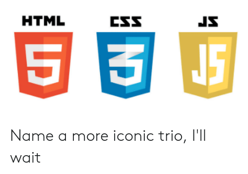

Web is the best interface platform out there, it has the best design language and best content semantics. On top of that it is consistent, cross platform and extremely developer friendly, to learn as well as to get good at. So much quality content is available out and that too for free, its a great time to be working with web technologies.
But there is this one other thing, that is full of gems of immense potential which is talked about way less, Introducing the DOM APIs.
DOM APIs are not a part of HTML, CSS or JavaScript but a separate topic which needs to be given the time to study as its own thing. Many of us already use them in our everyday development without knowing this, which is one reason that they are often misunderstood as being a part of JavaScript and thus go unnoticed.
A few of the APIs that I find more interesting are:-
- Intersection Observer - This API provides a consistent interface for building features like lazy loading, infinite scrolling, complex analytics, etc.
- DocumentFragments - This API allows you to optimize your DOM interactions and is at the heart of Svelte frameworks speedy, no virtual DOM model.
- Navigator - This API allows you to do so many cool things, the only way to know it is to check it out.
To learn more about, these topics or so many more things related to this, you should consider on reading into MDN documentation, which explains everything you wanna know about any of these topics.